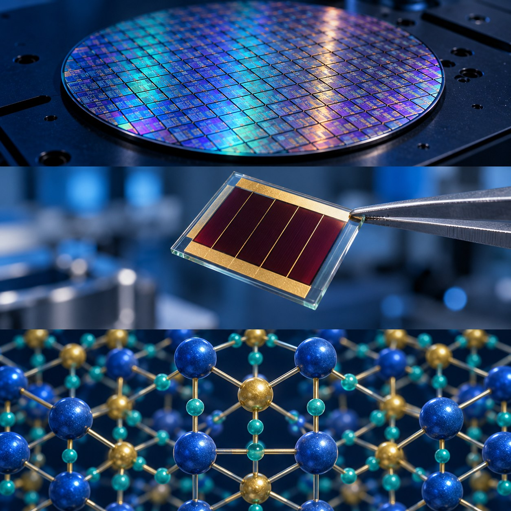

ASMD LAB / NIT DELHI
Advanced Semiconductor Materials and Devices Laboratory
Materials, photovoltaics and semiconductor devices for energy, electronics and sensing.
FACULTY

Lab at a glance
Explore our research →Research themes4Materials · Energy · Electronics · SensingResearch details ↗Lab Publications—Collection being preparedPublications & DOI links ↗Current members—Directory being preparedPresent & past members ↗Research projects—Project details being preparedProjects & collaborations ↗